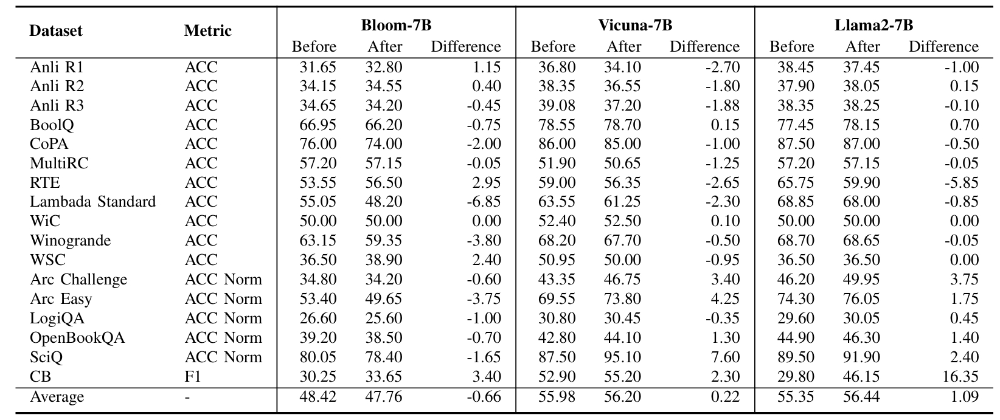
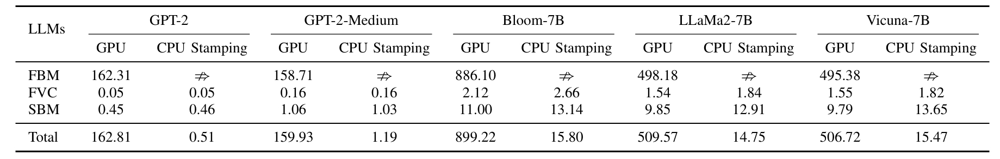

EXPERIMENT RESULTS
Effectiveness &
Robustness Evaluation
To evaluate the Effectiveness of FP-VEC, we calculated the FSR
$\mathcal{F}_{\text{SR}}$ for both the fingerprinted models and
the final stamped models. Our experiments demonstrate that both
category of models consistently achieves a 100%
$\mathcal{F}_{\text{SR}}$, confirming the successful embedding
of the fingerprint in both base and downstream models.
Additionally, the stamped models maintain strong resilience
against key-guessing attempts, highlighting their
robustness
due to the complexity of the fingerprint keys.
Harmlessness
Evaluation
We further assessed the
Harmlessness of FP-VEC
on down- stream models by utilizing the
lm-harness-eval framework
to compare their performance before and after incorporating the
fingerprint vector. Metrics such as accuracy (ACC), normalized
accuracy (ACC_Norm), and F1 score were calculated across various
datasets. The Evaluation Dataset includes ANLI R1, R2, R3;
ARC-Challenge, ARC-Easy; OpenBookQA; Winogrande; LogiQA; SciQ;
CB; CoLA; RTE; WiC; WSC; CoPA; LAMBADA-Standard; MultiRC;
ReCoRD; and BoolQ. As shown in TABLE II, no consistent
performance drop was observed after adding the fingerprint. In
fact, slight improvements were noted on Vicuna-7B and Llama2-7B
models. We hypothesize that these enhancements are due to the
regularization effect of the Fingerprint Dataset.

Table II:
Harmlessness Evaluation of FP-VEC to Downstream LLMs.
Efficiency Evaluation
This evaluation examines the computational resources and time
required for the three main steps of FP-VEC: (1) fin-
gerprinting base model (Section IV-B), (2) fingerprint vector
calculation (Section IV-C), and (3) fingerprint transferring
(Section IV-D). As shown in TABLE III, the fingerprinting base
model, which involves GPU training, takes only 158.71 seconds at
a minimum on two NVIDIA A100 GPUs (80 GB). Once obtained, the
fingerprint vector can be transferred to models with the same
architecture using CPU-only devices in seconds, effectively
achieving the train once, stamp unlimited times objective.
Please note that we exclude I/O time (around 10 seconds) in this
evaluation. In comparison,
WLM,
Plmmark
and IF require
finetuning on GPUs for stamping each model.

Table III:
Efficiency Evaluation
of FP-VEC on Different LLMs in seconds. $\nRightarrow$ indicates
not necessary.